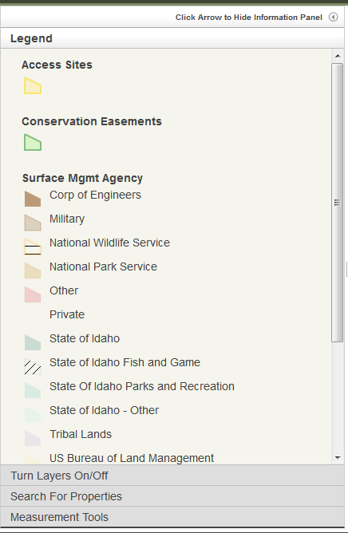

INFORMATION PANEL: Legend

Most all of the layers you can turn on/off in the Turn Layers On/Off content panel will be listed in the Legend. The Idaho Counties and Township Range Section layers will not show up in the Legend - they have labels on the map so they should be intuitively recognized.
To further identify a feature on the map you can click on it and the Popup Information Box will open.
Whatever is rendered in the Legend content panel will also be rendered in the legend of the PNG map created when using the Create PNG Image to Save or Print the Map tool.
Created with the Personal Edition of HelpNDoc: Free iPhone documentation generator